IL NOSTRO TERRITORIO
Benvenuti a Condove, un gioiello incastonato nella scenografica cornice della Bassa Valle di Susa, storica via di passaggio e crocevia di culture transalpine. Il nostro borgo è custode orgoglioso di tradizioni antiche, celebrate nella celebre Fiera della Toma, e di un territorio che sale ardito verso le vette, regalandoci autentiche perle del gusto.
È in questa terra che nascono le nostre eccellenze: Vino Valsusa DOC, Toma di Condove De.Co. e Patata della Montagna di Condove De.Co..
Il cuore pulsante della nostra realtà batte a Borgata Arronco, a 750 metri sul livello del mare: un balcone naturale che abbraccia l’intera valle. In questo angolo incontaminato, accarezzato dai venti alpini e baciato dal sole, coltiviamo con immensa passione la nostra vigna più importante, dove la terra difficile si trasforma in eccellenza liquida.
La nostra dedizione alla montagna non si ferma qui: tra le alture di Borgata Arronco e Borgata Camporossetto (1000 metri sul livello del mare), ci prendiamo cura della coltivazione delle nostre pregiate Patate della Montagna di Condove De.Co..
Cosa Vedere a Condove e Dintorni
Clicca sulle schede per scoprire i dettagli, i tempi di percorrenza e le indicazioni stradali per visitare i luoghi più belli della nostra valle:
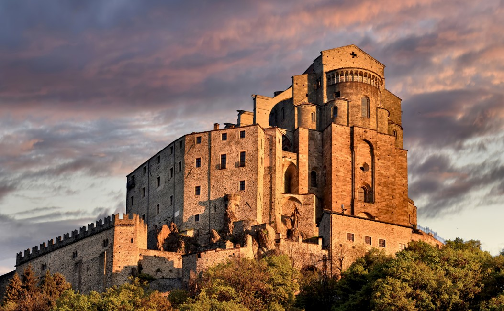
Monumento SimboloSacra di San Michele
L'imponente abbazia benedettina arroccata sul monte Pirchiriano, simbolo del Piemonte.
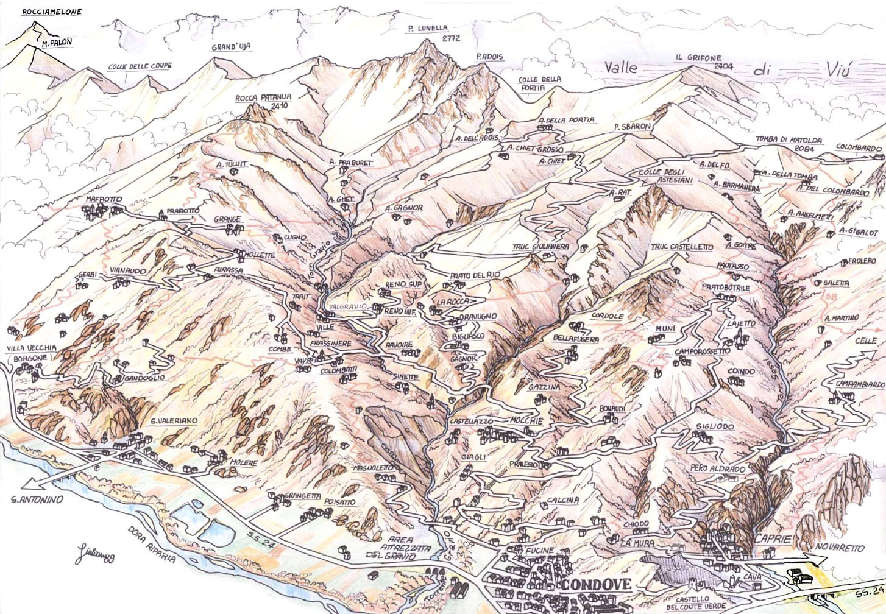
Tradizione AlpinaBorgate di Condove
Un itinerario affascinante tra le 77 borgate alpine e le antiche mulattiere.
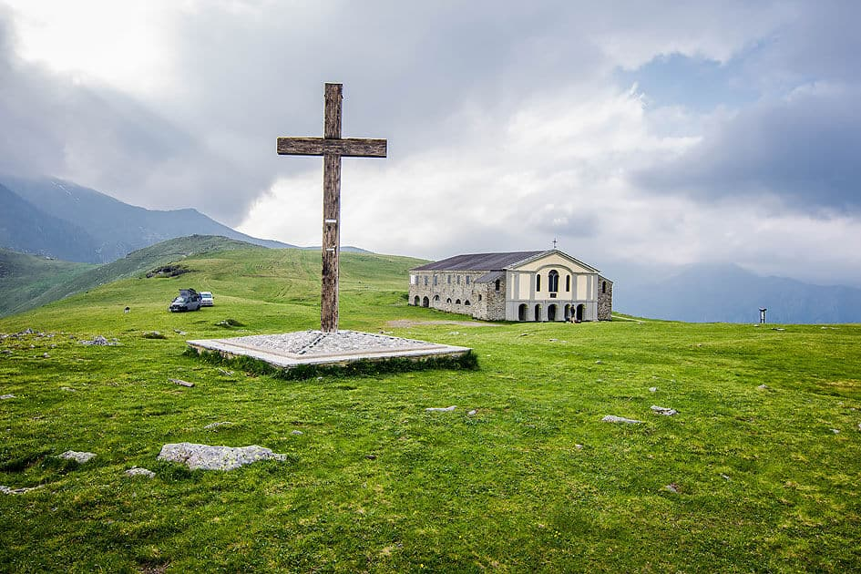
Alta Quota e ViniColle del Collombardo
Valico alpino a 1888 m s.l.m. celebre per il Santuario e i panorami meravigliosi.
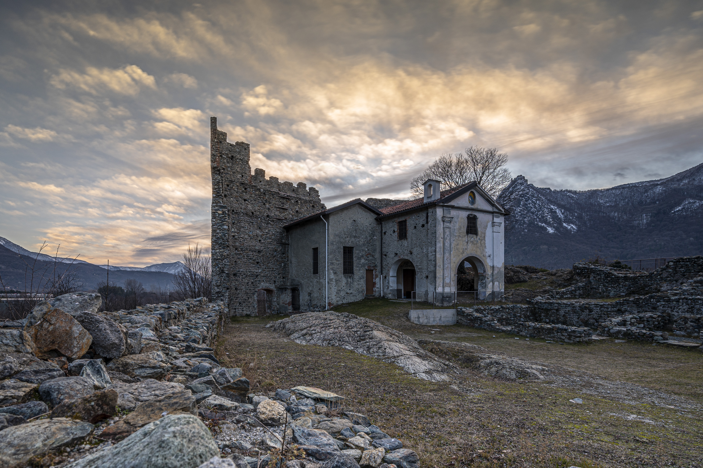
Archeologia MedievaleCastrum Capriatum
L'antico sito fortificato e complesso castrense della Valle di Susa.
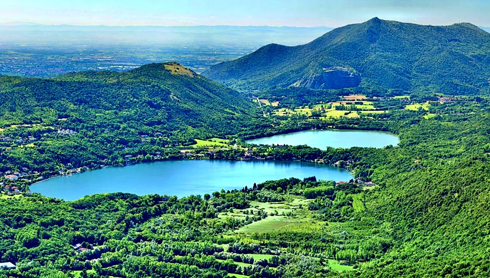
Natura e RelaxLaghi di Avigliana
Un'oasi naturale protetta ideale per passeggiate ed escursioni in kayak.
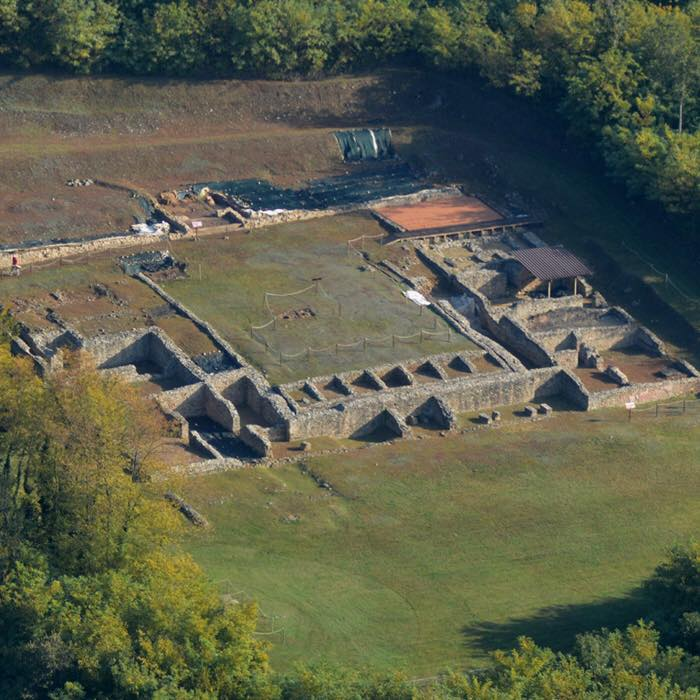
Archeologia RomanaVilla Romana di Almese
Uno dei complessi residenziali romani di epoca imperiale più importanti del Piemonte.
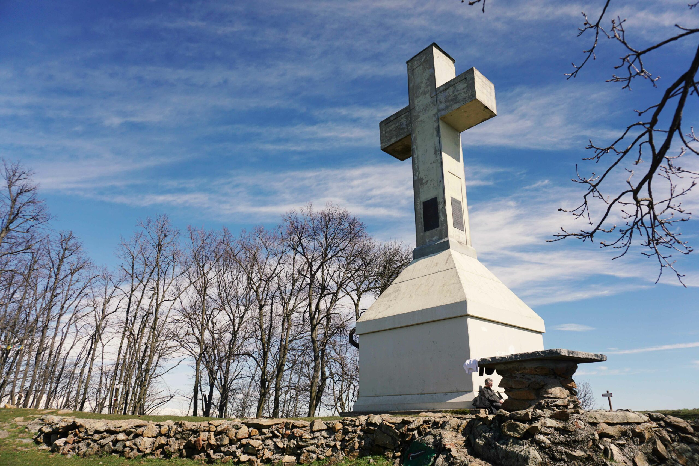
Escursionismo e LeggendeMonte Musinè
La montagna simbolo dell'imbocco della valle, ricca di sentieri e leggende.
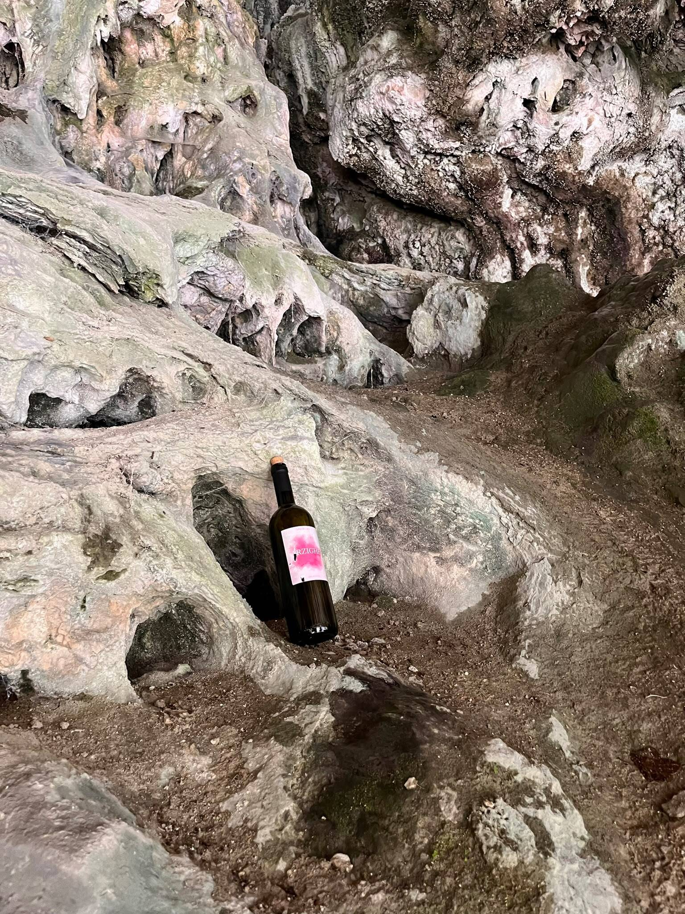
Natura e AvventuraOrridi di Chianocco e Foresto
Spettacolari canyon naturali scavati nella roccia dall'acqua.
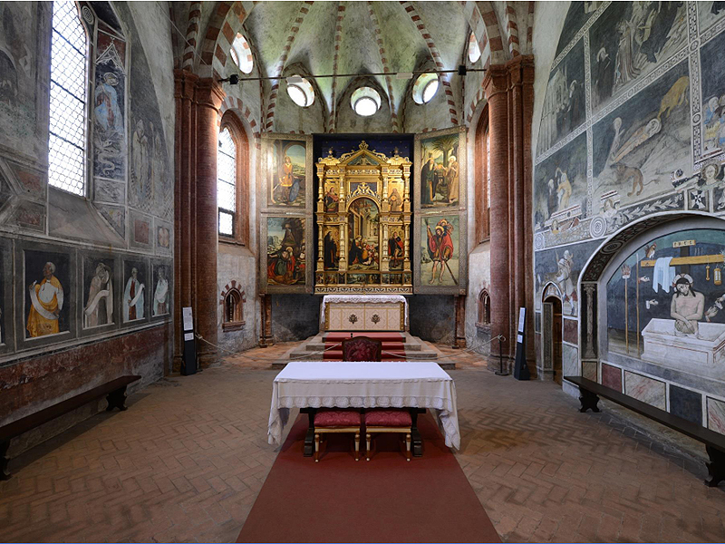
Arte e Spiritualità GoticaPrecettoria di Sant'Antonio di Ranverso
Gioiello medievale celebre per gli affreschi quattrocenteschi di Giacomo Jaquerio.
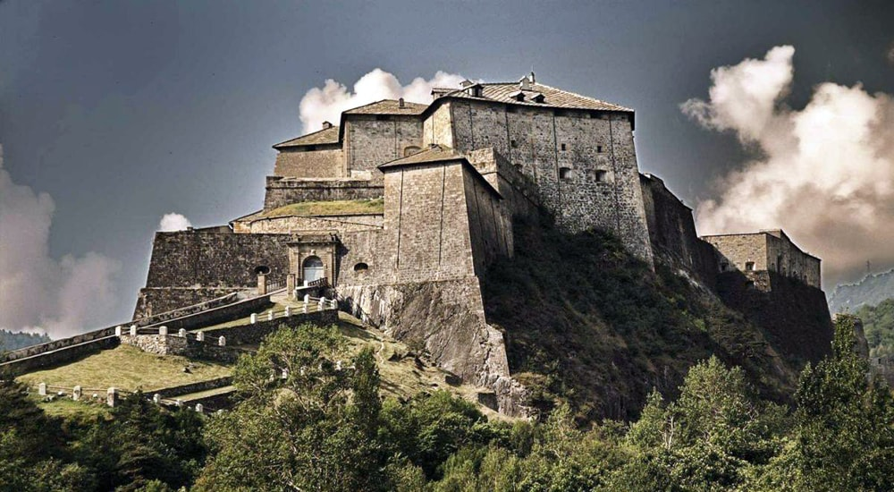
Storia e FortificazioniSusa Romana e Exilles
La città di Susa ricca di monumenti romani e la maestosa fortezza militare.
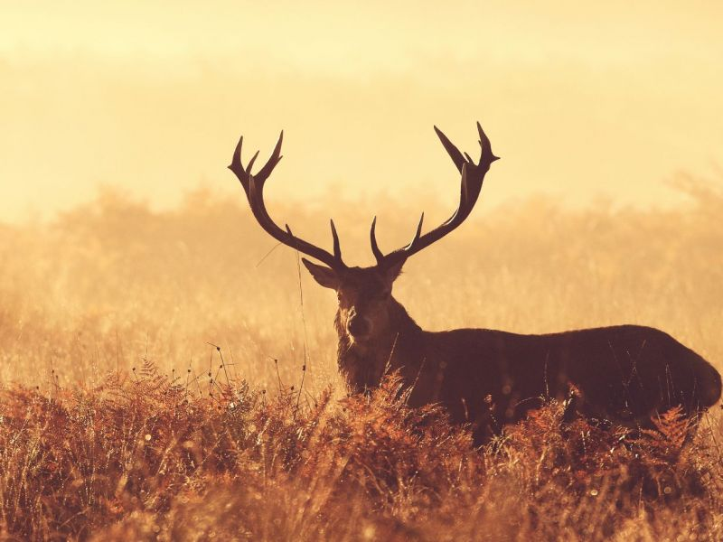
Natura e Storia RealeParco Naturale della Mandria
3.000 ettari di natura protetta, residenza di caccia sabauda e dimora della Bela Rosin.
 Città Regale e d'Arte
Città Regale e d'Arte
Torino
La prima capitale d'Italia, ricca di storia sabauda, musei di fama mondiale e fascino regale.
Per qualsiasi di questi posti è possibile un'uscita con la nostra Guida Naturalistica Ambientale certificata. Contattaci!